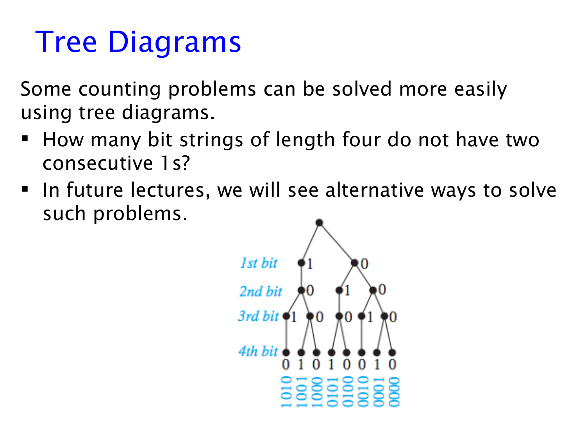
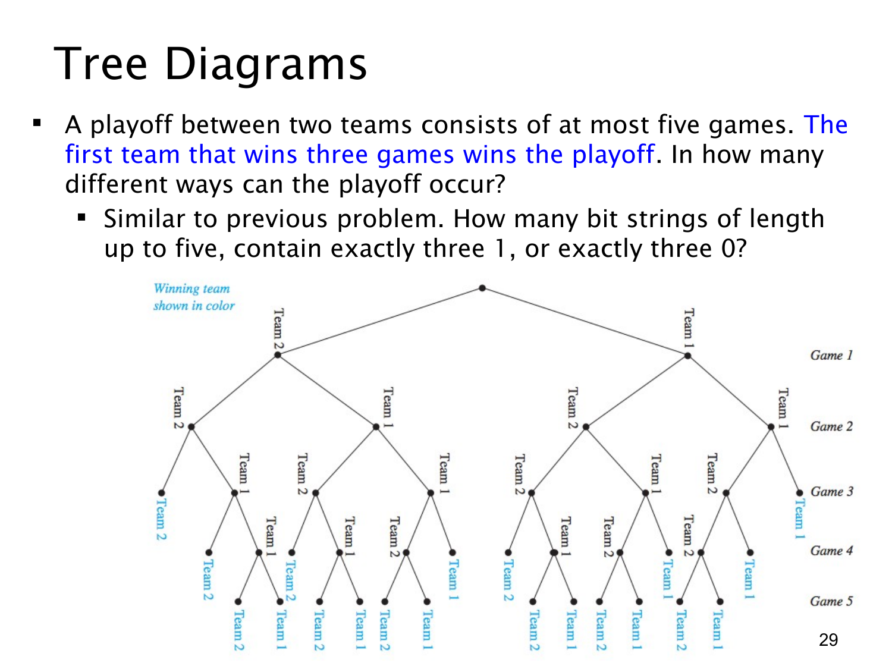

树形图与停止条件
沿分支构造合法位串，数清五局三胜的结束路径。
0 道练习
查看这一页课件

树形图：不允许出现相邻的两个 1
题目要数长度为 4、没有连续两个 1 的二进制串。例如 1010 合法，0110 不合法，因为中间出现了 11。连续三个 1 也不允许，因为其中同样包含相邻的两个 1。
图中的树从最上面的根开始，每向下一层，就为下一位选择 0 或 1。走到第四层得到一个完整四位串；最下面的每个叶子对应一个合法结果。
分支的规则是：第一位可以选 0 或 1；如果上一位是 0，下一位仍可选 0 或 1；如果上一位是 1，下一位只能选 0。这样在构造过程中就排除了所有含有 11 的串。
图中从左到右的叶子分别是：
1010 1001 1000 0101 0100 0010 0001 0000
一共有 8 个。
不能直接用 24=16，因为并不是每一步在每一种前缀后都允许两种选择。有的节点分出两条支路，有的只能分出一条，树形图能把这种差别画出来。
也可以看根节点下的两棵子树：首位是 1 的有 1010、1001、1000，共 3 个；首位是 0 的有另外 5 个，所以总数为 3+5=8。这里仍然在用加法法则，只不过树把分类过程直观地表示出来。
如果长度很大，逐个画节点会变得繁琐。课件最后一句提示以后会有其他方法；本页的目标是先理解“合法选择的分支”和“最终结果的叶子”如何对应。
查看这一页课件

五局三胜：一方取得第三胜就停止
两队进行最多五场的系列赛，谁先赢三场，整个系列赛就结束。要数的是每场胜者形成的完整比赛过程，不只是最后哪队获胜。默认每场都有一方获胜，没有平局。
树的每一层表示一场比赛，每个节点向下一步分成 Team 1 获胜或 Team 2 获胜。一条路径中某队累计赢到三场时，就成为叶子，不再向下延伸。图中不同叶子有不同深度，正是因为系列赛可能在第 3、4 或 5 场结束。
按比赛结束的场数计数。先固定最终获胜的一队：
- 3 场结束：该队连赢三场，只有 1 种。
- 4 场结束：最后一场必须由该队赢，前三场中它恰好赢两场、输一场。那场失利可在三个位置之一，共 3 种。
- 5 场结束：最后一场必须由该队赢，前四场双方必须各赢两场。为该队选两个获胜位置，有 (24)=6 种。
固定获胜队共有 1+3+6=10 种过程。两队都可能获胜，因此总数为：
2(1+3+6)=20.
课件提到可以用 1 和 0 分别表示两队获胜，但这里需要特别补足停止条件：不能只要求位串长度不超过 5，且含恰好三个 1 或恰好三个 0。
例如 1110 虽然恰有三个 1，却不是合法比赛过程，因为 111 出现时系列赛已经结束，不会再进行第四场。正确的位串必须在最后一位才让某一方首次达到三胜。树形图的叶子恰好表达了这个限制。
课后练习
知识库中暂未找到只依赖本课知识的对应题目。你可以先遮住讲解中的结果，重新画出第 28、29 页的树形图，检查每条分支和停止条件。